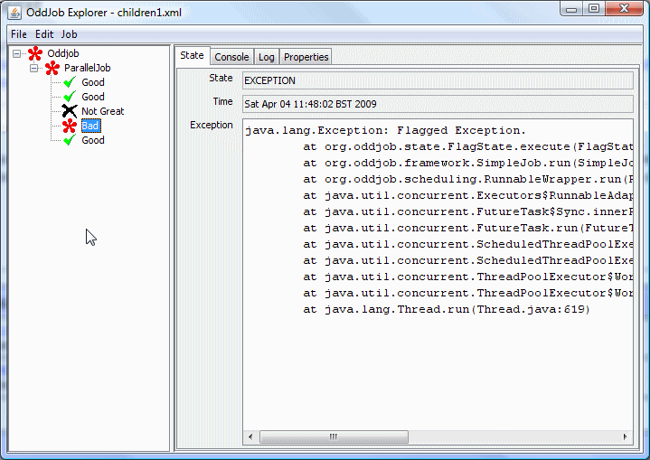
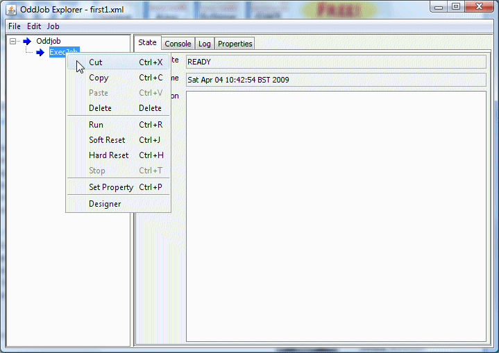
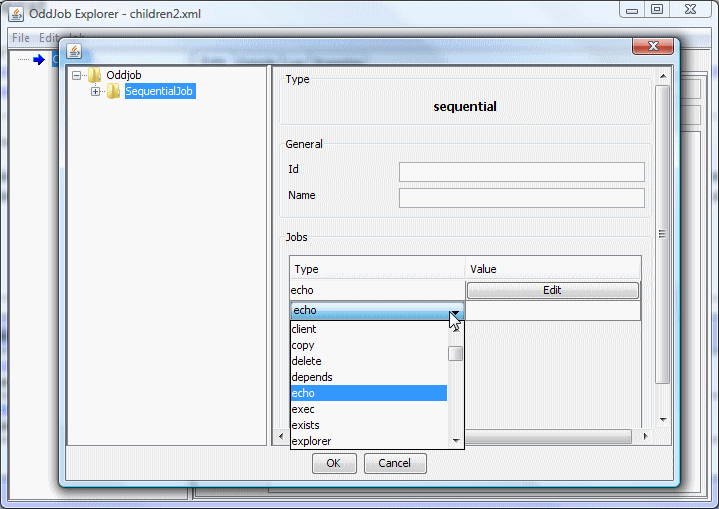
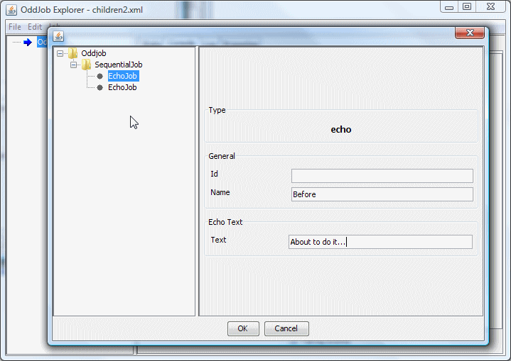
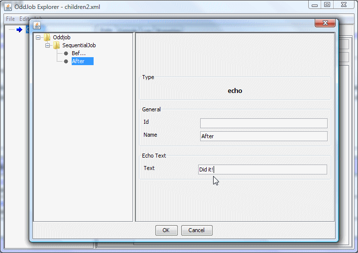
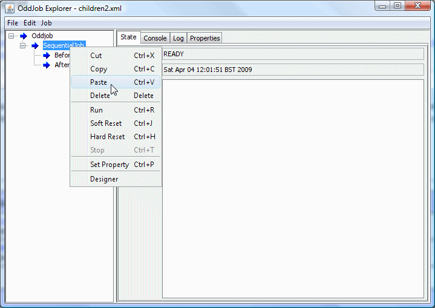

Oddjob jobs are arranged in a tree like hierarchy with an Oddjob job at the root. Only some jobs can have children, and only some jobs can have more than one child. Our root Oddjob job can only have one child.
Execution of jobs starts at the root and fans out down the tree like a Domino Cascade. The three main ways of controlling this cascade are using the jobs:
While execution cascades down the tree job, state reflects up the tree. Generally a parent reflects the worst state of any of it's children - so a parent is in an Exception state if any of it's children are.
To demonstrate a sequential series of jobs lets change the Oddjob configuration we created in the previous section so that our ExecJob is surrounded by some useful information jobs.
Because our Oddjob root can only have one child we need to cut out our ExecJob
Next create a new sequential child of Oddjob, and create two echo jobs. Echo jobs just echo some text to the console.
Configure the echo jobs to display something before the ExecJob has run.
And after the ExecJob has run.
Then click OK, to go back to Oddjob explorer and paste back our ExecJob onto the sequential job.
Now the order is wrong, so use the mouse to drag the ExecJob to between the Before and After.
And finally save the configuration and run the sequence.

And thats how easy it is to create a Sequence of Jobs.
Oddjob is just a job. It's job is to read a configuration, that is normally a file, and create the jobs required by the configuration and wire them together. It then runs the top most job in the hierarchy and reflects it's state.
By choosing a child type that is Oddjob we create a nested Oddjob. Nested Oddjobs allow large configurations to be broken down into more manageable units and they also allow repeated sections of configuration to be separated out so they need only be written once.
The examples are an example of nesting Oddjobs. Each example is
a separate nested Oddjob. Take a look at examples.xml
to see how it works.
Configuration values can be passed into a nested Oddjob using
either the
args, export and properties
properties. The export property allows any type to
be passed, such as a connection definition or even a reference
to a job. The other two properties only pass text. The
Reference Guide for Oddjob has more information on these properties.
A nested Oddjob can also have it's own job definitions. See the Developer Guide for more information on this.